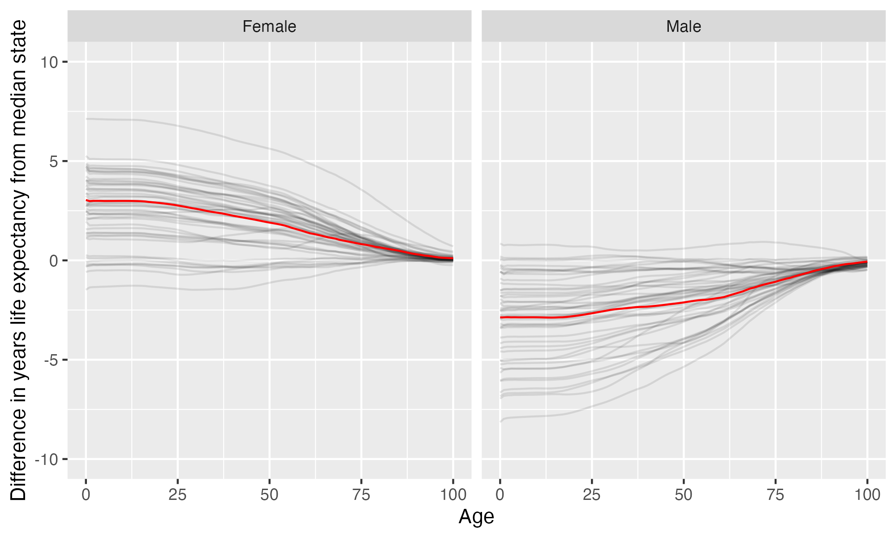

Lincoln Trail College
Lincoln Trail College is located in Robinson, Illinois. It is a public, 2-year institution.
From Wikipedia: Lincoln Trail College is a public community college in Robinson, Illinois. The college was founded in 1969 and is a member of the Illinois Eastern Community Colleges organization.
Notes
These are items that bear looking into more closely.
This institution has limited or no participation in the federal Title IV program. This prevents students from receiving some types of federal aid. Some institutions are ineligible for various reasons. Others could be eligible but choose not to receive federal funds in order to avoid following the requirements that go along with them, such as guidelines on how to respond to sexual assault or bans on some kinds of discrimination.
There is insufficient data to determine whether this institution’s total assets have tended to increase or decrease over time.
This institution’s full-time undergraduate enrollment has tended to decrease over time.
From 2010 to 2021, full time undergraduate enrollment dropped from 531 to 362, a decline of 31.8%
Overview of institution
Institution kind: Associate’s Colleges: High Transfer-Mixed Traditional/Nontraditional
Undergrad program: Associate’s Colleges: High Transfer
Graduate program: Not classified (Exclusively Undergraduate)
Enrollment profile: Exclusively undergraduate two-year (see more details below)
Average net price for undergrads on financial aid: $5,229 (This is 40% the average cost of Harvard).
Average net price for families with $30K-48K income: $7,236 (This is $5,840 more expensive than what Harvard costs for equivalent students).
Actual price for your family: Go here to see what your family may be asked to pay. It can be MUCH lower than the average price but also higher for some.
Size and setting: Two-year, small
In state percentage: 89.8% of first year students come from Illinois
In US percentage: 96.0% of first year students come from the US
Student to tenure-stream faculty ratio: 28.1 (undergrads to tenure-stream faculty) [Tenure explained]
Student to faculty ratio: 28.1 (undergrads to all faculty)
Degrees offered: Certificate of less than 1 year, Certificate of less than 12 weeks, Certificate of at least 12 weeks but less than 1 year, Certificate of at least 1 year but less than 2 years, Associate’s degree
Schedule: Semester
Institution provides on campus housing: No
Freshmen required to live on campus: No
Meal plan: No
Covid vaccination requirement for students: At some point during the pandemic (this may have changed), this institution required students to be vaccinated against covid (based on info from here)
Covid vaccination requirement for faculty/staff: At some point during the pandemic (this may have changed), this institution required faculty and/or staff to be vaccinated against covid (based on info from here)
Advanced placement (AP) credits used: Yes
Disabilities: 3 percent or less of undergrads are registered as having disabilities.
Overview of location
- Abortion in this state: Protective (based on https://states.guttmacher.org/policies/ as of May 10, 2023)
- Gun law stringency: A- (higher grade = more stringent)
- State rep support for contraception: 77.8% of US reps from this state voted in favor of legal protections for contraception.
- State rep support for recognizing same-sex and interracial marriage: 83.3% of US reps from this state voted in favor of requiring states to recognize same-sex and interracial marriages performed in other states
- Anti-trans legislative risk: Safest (based on Erin Reed’s work, as of June 25, 2023)
- Ecological region: Central forest-grasslands transition
- Biome: Temperate Grasslands, Savannas & Shrublands
- Distance to mountains: 235.3 miles to Appalachian Mountains
- Climate: See overview at WeatherSpark
Similar institutions
This is using information about school size, acceptance rate, yield rate, graduation rate, cost, athletic conference, and similar metrics, but it can miss important axes of similarity (for example, culinary versus hair styling schools).
Map
Enrollment
| Lincoln Trail College | Change over ≤ 11 years | Trend | |
|---|---|---|---|
| Undergrads (full time) | 362 (2021) |

|
↓ -11 per year |
| Undergrads (part time) | 270 (2021) |

|
↓ -26 per year |
Student financing
At many universities, almost no students pay the listed tuition and fees (“sticker price”): instead, their financial aid package lowers this dramatically, but how much students pay can vary substantially based on family income and other factors. The tuition below is the average across many students receiving aid: your family may be asked to pay less or more than this.
| Lincoln Trail College | Change over ≤ 11 years | Trend | |
|---|---|---|---|
| Average net price (for students awarded aid) | $5,229 (2020) |

|
↑ $675 per year |
| Undergrads getting federal aid | 59% (2021) |

|
|
| Undergrads getting any aid | 99% (2021) |

|
|
| Undergrads getting Pell grants | 48% (2021) |

|
Teaching
| Lincoln Trail College | Change over ≤ 11 years | Trend | |
|---|---|---|---|
| Undergrads per tenure track instructor (lower is better) | 28 (2020) |

|
|
| Undergrads per instructor (lower is better) | 28 (2020) |

|
↑ 0.9 per year |
| Total instructors | 14 (2020) |

|
↓ -0.6 per year |
| Tenure track instructors | 14 (2020) |

|
↓ -0.6 per year |
| Non-tenure track instructors | 1 (2016) |

|
Student details
Institution finances
| Lincoln Trail College | Change over ≤ 11 years | Trend | |
|---|---|---|---|
| Revenue from tution and fees | 8.0% (2021) |

|
|
| Revenue | $14 M (2021) |

|
↑ $285,357 per year |
Graduation rates
Graduation rates for bachelor’s degrees within 150% of normal time (6 years for a 4-year degree). Note that this uses US federal demographic data: it only has two genders and a specified set of ethnicities and races. For groups with small numbers, the graduation rate may be highly variable year to year (do all three people in this group graduate this year or just two of three, for example).
Freshmen demographics
Demographic data for first time degree-seeking students. Note that this uses US federal demographic data: it only has two genders and a specified set of ethnicities and races.
| Lincoln Trail College | Change over ≤ 11 years | |
|---|---|---|
| Men (percent freshmen) | 54% (2021) |

|
| Women (percent freshmen) | 46% (2021) |

|
| American Indian or Alaska Native men (percent freshmen) | 0% (2021) |

|
| American Indian or Alaska Native women (percent freshmen) | 0.5% (2021) |

|
| Asian men (percent freshmen) | 0% (2021) |

|
| Asian women (percent freshmen) | 0% (2021) |

|
| Black or African American men (percent freshmen) | 5.6% (2021) |

|
| Black or African American women (percent freshmen) | 4.1% (2021) |

|
| Hispanic men (percent freshmen) | 4.1% (2021) |

|
| Hispanic women (percent freshmen) | 3.1% (2021) |

|
| Native Hawaiian or Other Pacific Islander men (percent freshmen) | 0% (2021) |

|
| Native Hawaiian or Other Pacific Islander women (percent freshmen) | 0% (2021) |

|
| White men (percent freshmen) | 42% (2021) |

|
| White women (percent freshmen) | 37% (2021) |

|
| Two or more races men (percent freshmen) | 1.5% (2021) |

|
| Two or more races women (percent freshmen) | 2.0% (2021) |

|
| Race ethnicity unknown men (percent freshmen) | 0% (2021) |

|
| Race ethnicity unknown women (percent freshmen) | 0% (2021) |

|
| Nonresident alien men (percent freshmen) | 0% (2021) |

|
| Nonresident alien women (percent freshmen) | 0% (2021) |

|
Freshmen geography
| Lincoln Trail College | Change over ≤ 11 years | |
|---|---|---|
| In state | 90% (2021) |

|
| US | 96% (2021) |

|
| Not reported | 0% (2021) |

|
Tenure track faculty
Tenure track faculty are those who are eligible for tenure. This includes both pre-tenure and tenured faculty. Once faculty get tenure, they are (generally) protected from being fired for intellectual reasons, helping to ensure their freedom in teaching and research. They can still lose their positions for misconduct, financial problems, not fulfilling their duties, or other reasons. Note that this chart uses US federal demographic data: it only has two genders and a specified set of ethnicities and races.
| Lincoln Trail College | Change over ≤ 11 years | Trend | |
|---|---|---|---|
| Total (tenure-track count) | 14 (2020) |

|
↓ -0.6 per year |
| Women (tenure-track count) | 7 (2020) |

|
|
| Men (tenure-track count) | 7 (2020) |

|
|
| American Indian or Alaska Native (tenure-track count) | 0 (2020) |

|
|
| Asian (tenure-track count) | 1 (2020) |

|
|
| Black or African American (tenure-track count) | 0 (2020) |

|
|
| Hispanic or Latino (tenure-track count) | 0 (2020) |

|
|
| Native Hawaiian or other Pacific Islander (tenure-track count) | 0 (2020) |

|
|
| White (tenure-track count) | 12 (2020) |

|
↓ -0.7 per year |
| Two or more races (tenure-track count) | 1 (2020) |

|
|
| Nonresident alien (tenure-track count) | 0 (2020) |

|
Non-tenure track faculty
Non-tenure track faculty are not eligible for tenure. Some are hired one semester at a time, some have multi-year contracts. They typically have a higher teaching load than tenure track faculty, leaving less time for research or other creative endeavors. They are also easier to fire than tenured faculty. Sometimes they are external experts (a noted musician, a former senator) who are hired to teach some classes without the expected permanence of a tenure-track position. Note that this chart uses US federal demographic data: it only has two genders and a specified set of ethnicities and races.
| Lincoln Trail College | Change over ≤ 11 years | |
|---|---|---|
| Total (non-tenure-track count) | 1 (2016) |

|
| Women (non-tenure-track count) | 1 (2016) |

|
| Men (non-tenure-track count) | 0 (2016) |

|
| American Indian or Alaska Native (non-tenure-track count) | 0 (2016) |

|
| Asian (non-tenure-track count) | 0 (2016) |

|
| Black or African American (non-tenure-track count) | 0 (2016) |

|
| Hispanic or Latino (non-tenure-track count) | 0 (2016) |

|
| Native Hawaiian or other Pacific Islander (non-tenure-track count) | 0 (2016) |

|
| White (non-tenure-track count) | 1 (2016) |

|
| Two or more races (non-tenure-track count) | 0 (2016) |

|
| Nonresident alien (non-tenure-track count) | 0 (2016) |

|
Library facilities
Life expectancy
This hopefully will not be relevant for potential students, but it may be for people moving to an area longer term, such as faculty and staff choosing where to live. This uses information from US National Vital Statistics Reports for 2020; like much federal data, it assumes people are male or female. For age difference from median, it is from the median state, averaging across all genders (one consequence of this is that the difference from the median life expectancy is almost always negative for men).
- Life expectancy at birth: 79.8 years women (3 years over the median), 73.8 years men (2.9 years below the median)
- Remaining life expectancy at age 18: 62.4 years women (2.9 years over the median), 56.6 years men (2.8 years below the median)
- Remaining life expectancy at age 30: 50.8 years women (2.6 years over the median), 45.7 years men (2.5 years below the median)
- Remaining life expectancy at age 45: 36.6 years women (2.1 years over the median), 32.3 years men (2.2 years below the median)
- Remaining life expectancy at age 60: 23.4 years women (1.4 years over the median), 20.1 years men (1.9 years below the median)
We can also plot the extra / fewer years of life expected for this state (red) compared to other states (dark gray) at each age. Again, this is normalized for the median state.
